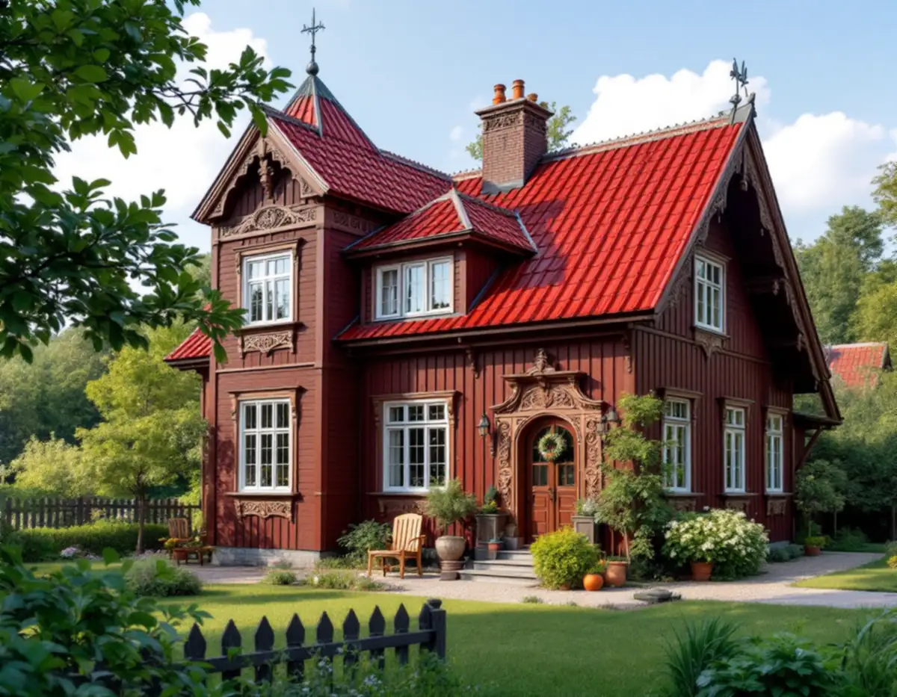
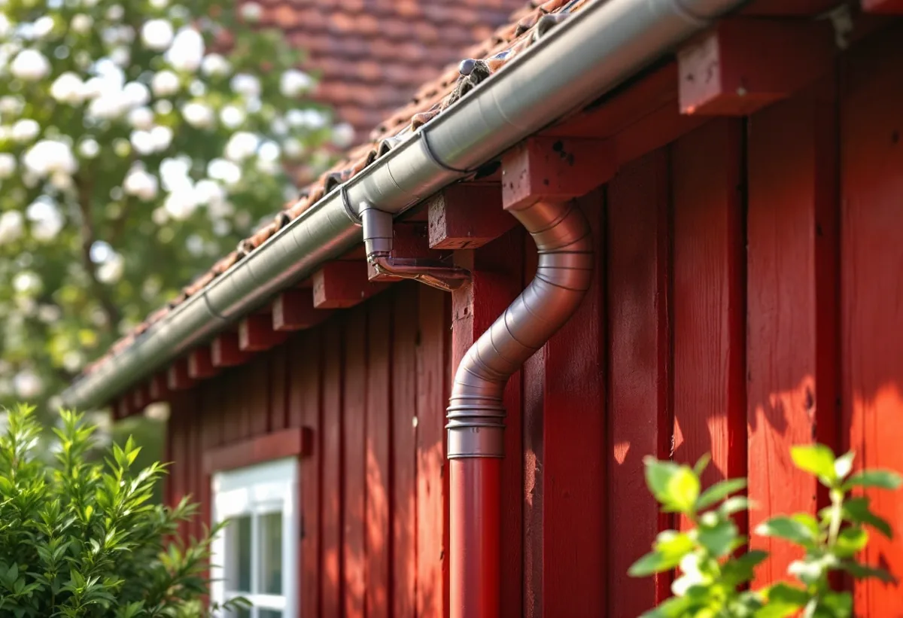
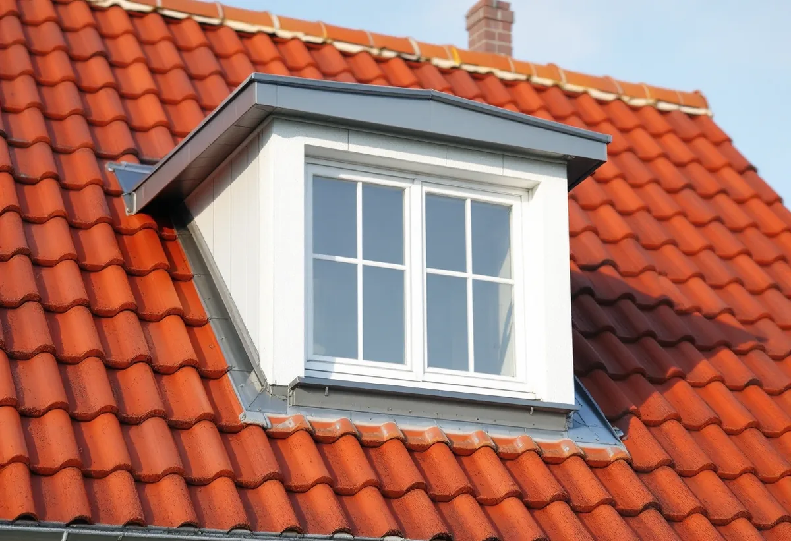

Platsbesök
Gratis besök där vi ser på tak, rännor och detaljer.

I Duvbo har sekelskiftesvillorna ofta tak av falsad slätplåt eller rött lertegel, och där är lovplikten utökad så att även ett byte av takmaterial kräver bygglov.
Skicka gärna en bild på taket.
Något blev fel. Kontrollera uppgifterna eller ring 08 12 410 276.
Vi tittar på jobbet på plats innan du får offert.
Du ser vad som ingår och vad det kostar.
Vi drar av ROT direkt och sköter ansökan.
Geal Entreprenad AB, Bromma. Org.nr 559303-7566.

Geal Entreprenad AB har egna plåtslagare som lägger falsad plåt, byter hängrännor och stuprör och hjälper dig med underlaget till Sundbybergs stad.
Sundbybergs miljöprogram för Duvbo berättar att föreningen Egna Hem bildades 1898 för att skapa egna hem för arbetare. Året därpå köpte föreningen egendomen Dufvebol och gjorde en stadsplan med 325 tomter, och 1924 utökades området västerut med ytterligare 98 villatomter. Riksantikvarieämbetet pekade 1987 ut Duvbo som riksintresse för kulturmiljövården.
Husen är enligt programmet framför allt byggda vid sekelskiftet 1900 och under 1920-talet. Sekelskiftesvillornas tak i rött lertegel eller falsad plåt är ofta oregelbundna och har ibland torn och kupoler. För sekelskiftet anger programmet rött lertegel, falsad slätplåt och eventuellt papp, med synliga kontursågade taktassar.

I samband med en planändring för Duvbo har bygglovsplikten utökats. Den omfattar bland annat utbyte av fasadbeklädnad och takläggningsmaterial, omfärgning av fasaden och utbyte, flyttning eller igensättning av fönster och dörrar. Programmet anger att åtgärder inom ramen för den utökade lovplikten är kostnadsfria.
Programmet säger också att byggnadens tidstypiska uttryck inte får förvanskas genom byte av takmaterial, och att material vid underhåll om möjligt ska väljas i överensstämmelse med originalet eller byggnadens tillkomsttid. För ett plåttak betyder det falsad plåt som liknar den som låg, inte en annan profil. Vi tar fram en beskrivning av material och utförande som kan bifogas ansökan.
Programmet har också råd för hus som inte ser ut som originalen. Äldre hus som kraftigt förändrats bör om möjligt anpassas bättre till omgivningen i samband med andra åtgärder, och hus som tillkommit senare och avviker från den äldre stilen ska anpassas till omgivningen när det gäller takmaterial och färgsättning. Ett nytt plåttak kan alltså vara ett tillfälle att ta huset närmare Duvbos karaktär.
Utanför Duvbo gäller Sundbybergs stads vanliga regler. För en- och tvåbostadshus krävs inte längre bygglov för fasadändringar, så länge huset inte är kulturhistoriskt värdefullt eller ligger i ett särskilt värdefullt område. För flerbostadshus och kontorshus krävs bygglov om ändringen görs på fasad eller tak som vetter mot allmän plats.
Staden skriver också att solcellspaneler kräver bygglov oavsett hustyp, och att det går att söka frivilligt bygglov om du vill vara säker på att en åtgärd följer lagens krav. Ska taket bytas helt beskriver vi den delen under takläggare i Sundbyberg.
På en sekelskiftesvilla sitter plåten inte bara på taket. Hängrännor, stuprör, fönsterbleck, plåt på verandatak och beslag runt torn och kupoler hör till samma helhet. Vi byter det som är skadat och anpassar nya delar efter det som finns kvar, så att huset behåller sitt uttryck. Runda hängrännor och stuprör i plåt passar de flesta äldre villor, och vi målar dem gärna i en kulör som stämmer med huset.
Innan vi lägger om någon plåt kontrollerar vi underlaget och takassarna. Programmet räknar de synliga, kontursågade taktassarna till sekelskiftesvillornas karaktär, så vi skyddar dem under arbetet. Programmet påminner också om plan- och bygglagens krav på att ändringar ska utföras varsamt, så att byggnadens särdrag beaktas och dess byggnadstekniska, historiska och kulturhistoriska värden tas till vara. Mer om tjänsten finns under plåtslagare.
Gratis besök där vi ser på tak, rännor och detaljer.
Vi kontrollerar om huset ligger i Duvbo eller är värdefullt.
Material och utförande till ansökan.
Du söker lov med vårt underlag när det krävs.
Falsad plåt, rännor, stuprör och bleck.
Kontroll av avvattning och skötselråd.
Äger du ett småhus räknar Skatteverket det som rotarbete att reparera, rengöra eller byta ut plåttak, hängrännor och stuprör, att byta fönsterbleck och att montera och montera ner byggnadsställningar i samband med arbetet. Avdraget är 30 procent av arbetskostnaden, högst 50 000 kronor per person och år, och material och resor ger inget avdrag. Geal drar avdraget direkt på fakturan.
Bor du i en bostadsrätt i ett flerbostadshus ger plåtarbeten på husets tak inget rotavdrag.
Takets yta och form, torn och kupoler, om plåten lagas eller läggs om, rännor och stuprör, ställning och om en beskrivning till bygglovet behövs. Efter ett gratis platsbesök får du ett skriftligt kostnadsförslag.
Plåttak, hängrännor och beslag.
Plåtslagare i Stockholm →Takbyte, takbesiktning och plåtarbeten.
Takläggare i Sundbyberg →Rött lertegel och synliga taktassar i Duvbo.
Takrenovering i Sundbyberg →Duvbo, potten och medgivandena.
Attefallshus i Sundbyberg →Ventilationen, OVK och Duvbo.
Badrumsrenovering i Sundbyberg →Nytt hus, träd och regler i Duvbo.
Byggföretag i Sundbyberg →Puts och kulör i stadskärnan.
Fasadmålning i Sundbyberg →Panel och puts på Duvbos villor.
Fasadrenovering i Sundbyberg →Duvbo, flerbostadshusen och lovet.
Fönsterbyte i Sundbyberg →Egnahemsvillornas fönster i Duvbo.
Fönsterrenovering i Sundbyberg →Trägolv i äldre villor och nya golv.
Golvläggare i Sundbyberg →Ta bort färg och fernissa från gamla golv.
Golvslipning i Sundbyberg →Duvbos villor och stadens lägenhetskök.
Köksrenovering i Sundbyberg →Lamellhus, kulörbyte och bostadsrätt.
Målare i Sundbyberg →Altan, pergola och staket enligt stadens guide.
Snickare i Sundbyberg →Container, ställning och grannar.
Takbyte i Sundbyberg →Ny tapet i äldre lägenheter.
Tapetsering i Sundbyberg →Duvbo, träden och riktlinjerna.
Tillbyggnad i Sundbyberg →Duvbos villor, kaminer och etablering.
Totalrenovering i Sundbyberg →Eller ring 08 12 410 276, mån–fre 08–17.
Skicka gärna en bild på taket.
Något blev fel. Kontrollera uppgifterna eller ring 08 12 410 276.